Reconstructing DNA
from fragments
What can the reads support?
What remains ambiguous?
Week 03
Bioinformatics for Engineers · 2026/2027
What can the reads support?
What remains ambiguous?
Week 03
The bridge from alignment
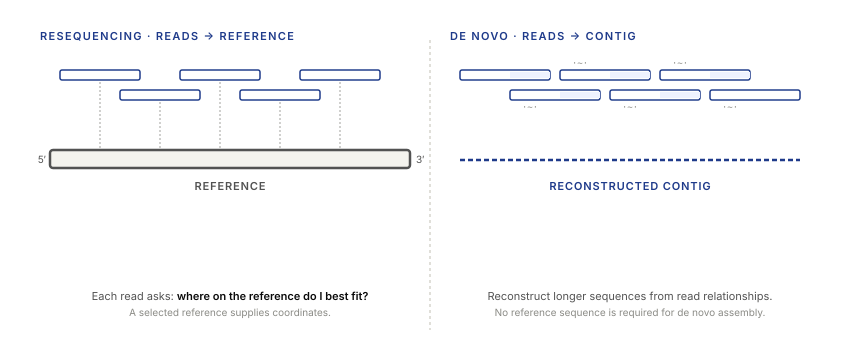
Today: de novo assembly uses relationships among reads to reconstruct longer sequence.
Today: de novo assembly uses relationships among reads to reconstruct longer sequence.
Predict the missing link
Which relationships between
short reads
could help reconstruct a longer sequence?
Agreement between overlapping fragments gives one source of evidence.
We begin with forward, error-free toy reads.
Sampling and read length
3 reads × 4 bases
÷12 target bases
1× mean depthDoes a mean of one imply one observation at every position?
Coverage at each position
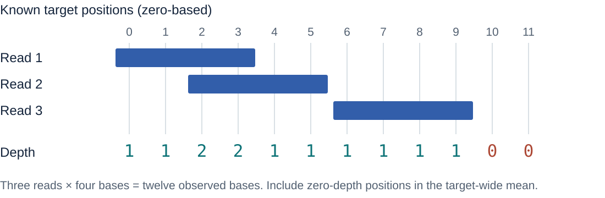
What are the mean depth and the fraction covered?
Mean = 12/12 = 1×. Breadth = 10/12 ≈ 83.3%.
Depth and breadth
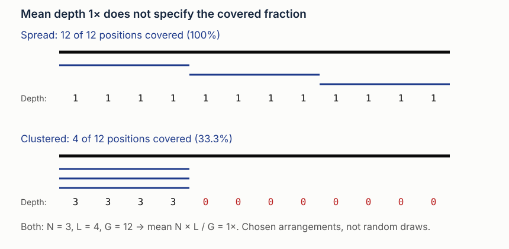
Both means are 1×. Their covered fractions are 100% and 33.3%.
Both means are 1×. Their covered fractions are 100% and 33.3%.
Coverage investigation
Keep the number and length of reads fixed.
Change where the reads begin.
Predict the covered fraction before running each preset.
Mean depth and the fraction covered answer different questions.
Connecting regions
The same total number of bases
can arrive in shorter
or longer fragments.
Which observation could connect more distant unique context?
More observed bases and a longer span provide different kinds of support.
Coverage and assembly information
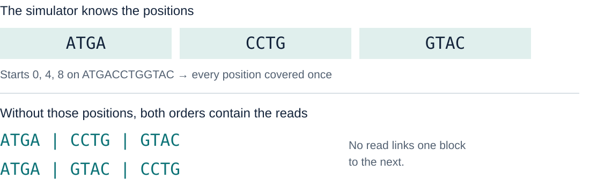
The assembler receives the reads, without their start positions.
Breadth is 100%, but no read spans either boundary.
Suffix-prefix overlaps
Which letters agree at the join?
Overlap GAC has length 3. Merge to obtain ATGACCT.
A representation of the evidence
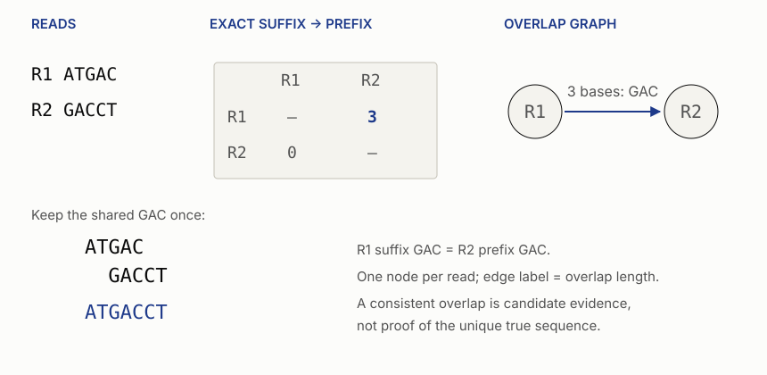
A directed connection records a suffix-prefix overlap.
A directed connection records a suffix-prefix overlap.
Greedy overlap heuristic
Find a best remaining overlap.
Merge that pair.
Repeat.
Which assumptions make this choice seem reasonable?
If two reads share the longest overlap, the rule leaves a tie.
Greedy ambiguity
Which overlap is longer?
Both overlap TGA by 3 bases. The candidate merges are ATGAC and ATGAT.
Overlap investigation
First reconstruct the unambiguous pair.
Then inspect the tied alternatives.
What evidence would justify the next join?
An unresolved reconstruction can remain in separate contigs.
Check a proposed reconstruction
Forward, exact reads: ATGA, TGAC, TGAT
| Candidate sequence | Length | All three reads present? |
|---|---|---|
ATGATGAC | 8 | Check the substrings |
ATGACATGAT | 10 | Check the substrings |
Does satisfying this test identify the true sequence?
Both pass. A shortest-string rule prefers the first;
the reads alone do not prove that rule matches the biology.
k-mers
ATG TGA GAC ACC CCT
Why are there five windows rather than seven?
A length-7 linear sequence has 7 − 3 + 1 = 5 three-base windows.
Count windows within each record
ATGAC
GACCT
ATGAC|GACCT
No observation crosses this separator.
Which extra 3-mers would concatenation invent?
ACG and CGA. Count 3 + 3 = 6 observed windows,
not the 8 windows in the concatenated string.
The de Bruijn representation
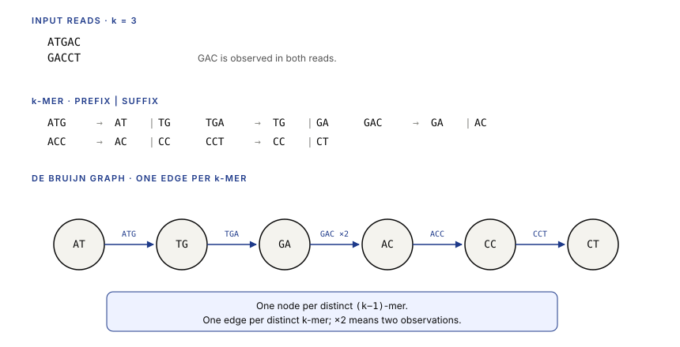
Each three-letter word joins its prefix to its suffix.
Each three-letter word joins its prefix to its suffix.
Checking the representation
| Word | Prefix node | Suffix node |
|---|---|---|
| ATG | AT | TG |
| TGA | TG | GA |
| GAC | GA | AC |
| ACC | AC | CC |
| CCT | CC | CT |
Read overlaps and short words
| Representation | A node represents | An edge represents |
|---|---|---|
| Read-overlap graph | A whole read | A suffix–prefix match |
| Our de Bruijn graph | A (k−1)-base word | An observed k-base word |
For ATGAC and GACCT, where does GAC appear?
It labels their overlap; at k=3 it is the edge GA → AC.
Traversal
AT → TG → GA → AC → CC → CT
Start with AT. Which new letter does each edge contribute?
AT + G + A + C + C + T = ATGACCT
Validate the next edge
Observed 3-mers: ATG · TGA · GAC · ACC · CCT
The current node is TG.
| Proposed next step | Required 3-mer | Present in the observations? |
|---|---|---|
TG → GA | TGA | Check the inventory |
TG → GC | TGC | Check the inventory |
Only TG → GA is an observed edge.
Matching the shared G is necessary, but not sufficient.
Graph investigation
For each k-mer, connect its prefix
to its suffix.
Then follow the available edges.
How does changing k change what the graph retains?
Context versus connectivity
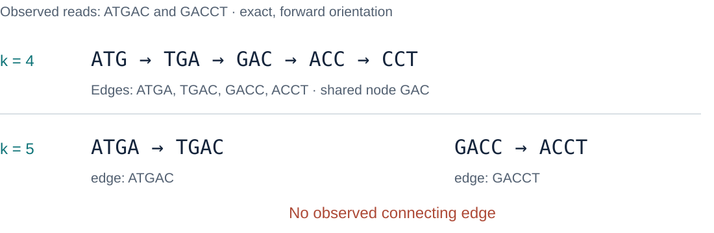
Which five-base word would connect the lower graph?
TGACC would connect TGAC → GACC.
Neither observed read contains it.
Multiplicity and sampling
Six observations. How many distinct words?
Five. GAC is observed twice; that alone does not establish two genomic copies.
Errors in overlapping windows
| Read | Window 1 | Window 2 | Window 3 |
|---|---|---|---|
ATGAC | ATG | TGA | GAC |
ATTAC | ATT | TTA | TAC |
At k=3, how many windows include the changed middle base?
All three. Three altered words can come from one base error.
Candidate paths
A path can fit the graph.
Is it the only supported path?
Which missing observations or repeated contexts could change the answer?
Test another traversal against the same observations.
Repeat ambiguity
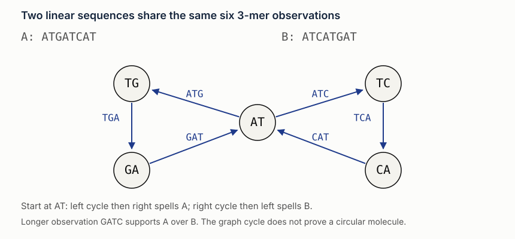
The short-word inventory alone does not determine the order of the cycles.
The short-word inventory alone does not determine the order of the cycles.
Repeat investigation
Which candidate contains the read GATC?
Only ATGATCAT. The four-base observation adds ordering evidence absent from the 3-mer inventory.
Branch evidence
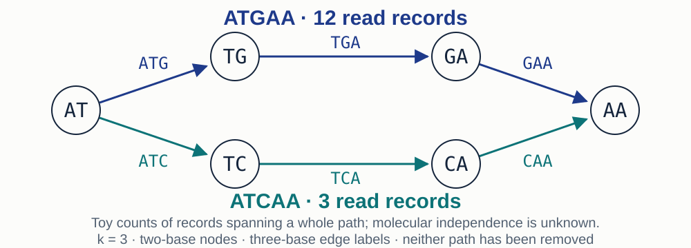
What evidence would change your decision?
Inspect quality, independent molecules, strands, and longer context. State whether the goal is one consensus or retained variation.
Inspect the smaller branch
| Evidence behind the three records | Follow-up A | Follow-up B |
|---|---|---|
| Distinguishing base | Low confidence | High confidence |
| Input molecules | Copies of one molecule | Three independent molecules |
| Longer observations | Support the other path | Link this path to the same flanks |
Would you make the same decision for both datasets?
B supports retaining a real alternative.
A leaves the original molecule’s sequence uncertain.
Contigs and linking evidence
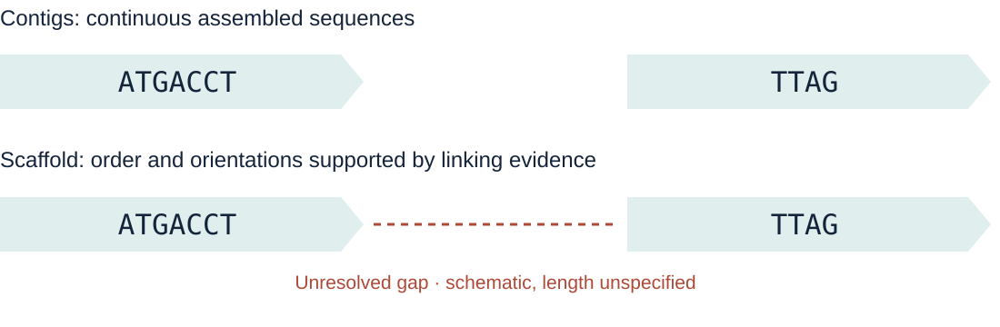
What has the linking evidence established? What is still missing?
An order and orientation can be supported
without determining every base between the contigs.
A contiguity summary
8 7 5
Total assembled length: 20
Halfway point: 10 bases
Starting longest first, which contig reaches at least half?
The second contig. N50 = 7 bases, L50 = 2 contigs.
Reading the summary
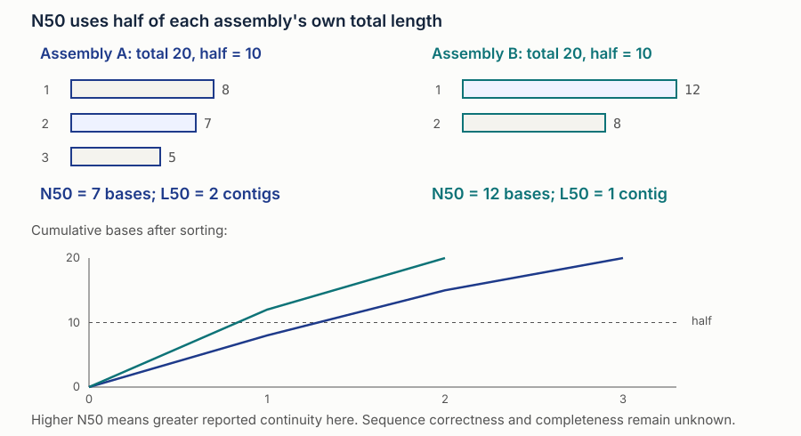
N50 uses half of the assembled bases. It does not test whether the joins are correct.
N50 uses half of the assembled bases. It does not test whether the joins are correct.
N50 investigation
Lengths 8, 7, 5
N50 7
Lengths 12, 8
N50 12
Which is more contiguous by this statistic?
Which is more correct?
The second has the larger N50. Correctness remains unknown from lengths alone.
Watch the denominator
| Contig lengths | Total | Half of total | N50 |
|---|---|---|---|
8, 7, 5 | 20 | 10 | 7 |
8, 7 | 15 | 7.5 | ? |
Delete the 5-base contig. Has any remaining contig improved?
N50 rises to 8. No contig grew; five assembled bases disappeared.
Evaluating an assembly
Choose the next measurement
A proposed contig joins ATGAC to GACCT
across the shared word GAC.
| Additional exact read | Question to ask |
|---|---|
GAC | Does repeating the overlap link its flanks? |
TGACC | Does one observation cross both sides of GAC? |
TGACC links left T, shared GAC, and right C.
Check independent molecules and unique context before accepting the join.
Exit discussion
Homework handoff
Count k-mers. Build the graph.
Spell the supplied node path. Calculate N50.
Open in Colab, save a copy, and run setup.
If the GitHub copy is unavailable, download and upload the notebook.